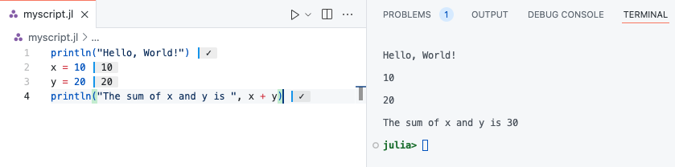

_
_ _ _(_)_ | Documentation: https://docs.julialang.org
(_) | (_) (_) |
_ _ _| |_ __ _ | Type "?" for help, "]?" for Pkg help.
| | | | | | |/ _` | |
| | |_| | | | (_| | | Version 1.11.6 (2025-07-09)
_/ |\__'_|_|_|\__'_| | Official https://julialang.org/ release
|__/ |
julia>Getting Started with Julia
This page provides an introduction to the Julia programming language, including its key features and installation process. You’ll learn how to install Julia on different operating systems and how to verify the installation. It also covers using the Julia REPL for interactive coding, creating and running Julia scripts, and managing packages with Julia’s built-in package manager, Pkg. Additionally, this page provides resources for learning and getting help with Julia, including official documentation, community platforms, and an overview of the Julia ecosystem.
Key Topics:
- Introduction to Julia: What makes Julia ideal for scientific computing and data analysis.
- Installing Julia: Step-by-step guide for installation on Mac, Linux, and Windows.
- Using the Julia REPL: How to interactively run Julia code.
- Running Julia Scripts: Creating and executing Julia scripts.
- Editors and IDEs: Overview of top editors and IDEs for Julia, including VS Code, Jupyter, Pluto.jl, Vim, and Emacs.
- Julia Documentation: Overview of the official Julia documentation and how to use built-in help features in the REPL.
- Package Management: Installing, updating, and managing Julia packages.
- Getting Help: Accessing Julia documentation and community resources.
- Julia Ecosystem: Introduction to JuliaHub, JuliaSim, and JuliaCon, as well as other valuable tools and resources within the Julia ecosystem.
Tip
This guide is designed for beginners and provides a comprehensive overview of the Julia programming language. Whether you’re new to programming or an experienced developer looking to learn Julia, this guide will help you get started with the language. If you want to go deeper into specific topics, check out the Julia Documentation and other resources mentioned in this guide. The website Modern Julia Workflows is a great resource for learning advanced Julia programming techniques.
Introduction to Julia Programming Language
Welcome to the world of Julia! This section will introduce you to the language, explaining why it’s gaining popularity, and highlighting some key features that make Julia a unique tool for scientific computing and general-purpose programming.
What is Julia?
Julia is a high-level, high-performance programming language primarily designed for technical computing. It combines the best features of other programming languages, including Python’s ease of use, C’s speed, and MATLAB’s support for numerical computation. Julia is open-source and has become a go-to language for scientific research, data analysis, and machine learning applications.
Why Julia?
High performance: Julia is designed for performance from the ground up. It often performs on par with statically typed languages like C or Fortran, thanks to Just-In-Time (JIT) compilation using LLVM.
Multiple dispatch: Julia uses multiple dispatch as its core paradigm, which allows for highly flexible and efficient function definitions.
Designed for scientific computing: Julia excels in areas such as linear algebra, numerical analysis, and optimization, making it a great choice for data-heavy fields like economics, physics, and engineering.
Ease of use: Julia offers a simple, intuitive syntax similar to Python and MATLAB, which makes it easy to learn and use, even for those with little programming experience.
Installing Julia
Download Julia
To get started with Julia, you first need to install the language on your computer. The official Julia website provides the installation files for various operating systems, including Windows, macOS, and Linux. Follow these steps:
- Visit the official Julia Downloads page.
- Choose the appropriate version of Julia for your operating system.
- Download the installer (the latest stable version is recommended for most users).
Installation Instructions
Before you can start using Julia, you need to install it on your system. Below are the steps for installing Julia on different operating systems: Mac, Linux, and Windows.
To install the latest stable version of Julia on Mac or Linux, follow these simple steps:
- Open your terminal.
- Run the following command to download and install Julia:
curl -fsSL https://install.julialang.org | shThis command downloads the Julia installation script and runs it automatically. It will install Julia and place it in your /usr/local/bin directory by default.
To install Julia on Windows, follow these steps:
- Open the Microsoft Store page for Julia.
- Click “Get” to download and install the latest version of Julia from the Microsoft Store.
Alternatively, you can install Julia using the Windows Package Manager (winget). Open the command prompt and run the following command:
winget install julia -s msstoreAfter installation, you can launch Julia by searching for it in the Start menu or by running julia in the command prompt.
Verify Installation
After installation, you can verify that Julia is correctly installed by opening a terminal or command prompt and typing the following command:
juliaThis will launch the Julia REPL (Read-Eval-Print Loop), where you can start running Julia commands interactively. You should see something similar to the following:
If you see this prompt, it means Julia is installed and working correctly!
Discover the Package Manager
Julia includes a built-in package manager, Pkg, that allows you to easily manage external packages (libraries) for your projects.
To start using
Pkg, open the Julia REPL and type:using PkgYou can install a package by running:
Pkg.add("PackageName")
For example, to install the popular plotting package Plots, run:
Pkg.add("Plots")This will download and install the package, making it available for use in your Julia scripts.
Using the Julia REPL
The Julia REPL (Read-Eval-Print Loop) is an interactive command-line environment for executing Julia code. It allows you to run Julia code line-by-line, evaluate expressions, and see the results immediately.
Starting the REPL
To start the Julia REPL, open your terminal or command prompt and simply type:
juliaYou should see the Julia prompt, which looks like this:
_
_ _ _(_)_ | Documentation: https://docs.julialang.org
(_) | (_) (_) |
_ _ _| |_ __ _ | Type "?" for help, "]?" for Pkg help.
| | | | | | |/ _` | |
| | |_| | | | (_| | | Version 1.11.6 (2025-07-09)
_/ |\__'_|_|_|\__'_| | Official https://julialang.org/ release
|__/ |
julia>This is the REPL where you can start typing Julia expressions.
Basic Commands
In the REPL, you can type expressions and commands. For example:
- To perform a simple arithmetic operation, type:
3 + 4The result will appear right below the command, like so:
7- To assign a value to a variable, use the
=sign:
x = 10Now, x holds the value 10. You can use it in further expressions:
x * 2The result will be:
20Using REPL Features
The Julia REPL has several features that make it more convenient to use:
History: You can use the up and down arrow keys to scroll through your command history and reuse previous commands.
Tab Completion: Type part of a function or variable name and press
Tabto automatically complete it or show suggestions.Help: Type
?followed by a function or type name to get documentation directly in the REPL. For example:
?sumThis will show information about the sum function.
- Exiting the REPL: To exit the REPL, simply type:
exit()Or press Ctrl-D (on most systems).
REPL Modes
The Julia REPL has different prompt modes that can be very useful to install / remove packages, run shell commands, search for help, etc. The different modes are:
- The Julian mode
- Help mode
- Package mode
- Shell mode
Visit the command-line REPL page for more details.
By pressing ? you can obtain information and metadata about Julia objects (functions, types, etc.) or unicode symbols. The query fetches the docstring of the object, which explains how to use it.
help?> printlnIf you don’t know the exact name you are looking for, type a word surrounded by quotes to see in which docstrings it pops up. To come back to Julia mode, hit backspace.
By pressing ] you access Pkg.jl, Julia’s integrated package manager. Please visit the documentation for details. Pkg.jl allows you to:
]activatedifferent local, shared or temporary environments;]instantiatethem by downloading the necessary packages;]add,]update(or]up) and]remove(or]rm) packages;- get the
]status(or]st) of your current environment.
As an illustration, we download the package Plots.jl inside our current environment:
pkg> add PlotsNote that you can do the same in Julia mode:
julia> using Pkg
julia> Pkg.rm("Plots")The package mode itself also has a help mode, accessed with ?. To come back to Julia mode, hit backspace.
By pressing ; you enter a terminal, where you can execute any command you want. Here’s an example for Unix systems:
shell> pwdTo come back to Julia mode, hit backspace.
Running Julia Scripts
While the Julia REPL is great for interactive experimentation, you’ll often want to write and run larger programs. This is where running Julia scripts comes in.
Creating a Julia Script
A Julia script is a plain text file that contains Julia code. You can create a Julia script using any text editor, such as VS Code, Sublime Text, or even a simple text editor.
Save the file with the .jl extension, for example myscript.jl.
Running a Julia Script
To run a Julia script, open your terminal or command prompt, navigate to the directory where the script is located, and then use the following command:
julia myscript.jlThis will execute the code in myscript.jl and output any results in the terminal. If your script includes print statements, those outputs will be displayed. See the command-line interface page for more details.
Example: Running a Script
Here’s an example of a simple Julia script:
# myscript.jl
println("Hello, World!")
x = 10
y = 20
println("The sum of x and y is ", x + y)To run this script, save it as myscript.jl and use the command:
julia myscript.jlThe output will look like this:
Hello, World!
The sum of x and y is 30Running Scripts with Arguments
You can also pass command-line arguments to a Julia script. For example, let’s modify the script to accept arguments:
# args_example.jl
println("Arguments passed to the script: ", ARGS)Now, when running the script, you can pass arguments like this:
julia args_example.jl arg1 arg2 arg3The output will be:
Arguments passed to the script: ["arg1", "arg2", "arg3"]You can access the arguments as elements of the ARGS array within your script.
Running Julia Scripts from the REPL
You can also run Julia scripts directly from the REPL by using the include() function. To run the myscript.jl script, for example:
include("myscript.jl")This command will execute the code in the script, and you’ll see the output in the REPL.
Running Julia Scripts in IDEs
If you’re using an IDE like VS Code with the Julia extension, you can run the script directly from within the editor by pressing the “Run” button or using the appropriate keyboard shortcut. This is convenient for testing and iterating on your code without having to switch back and forth between the editor and the terminal. See the Running Code page from Julia in VS Code documentation for more details.

Editors and Ides
While any text editor can be used to write Julia code, Integrated Development Environments (IDEs) significantly enhance the programming experience. Notable options for Julia include Visual Studio Code (VS Code), Jupyter, Pluto.jl, Vim, and Emacs. Each of these editors offers unique features like interactive environments, real-time code feedback, and specialized plugins for a smoother development process. For instance, VS Code with the Julia extension is the most feature-rich IDE for Julia, while Jupyter provides an interactive notebook environment. Pluto.jl focuses on reactive notebooks, and Vim and Emacs offer efficient, customizable text editing solutions.
The best IDE for Julia is Visual Studio Code, or VS Code, developed by Microsoft. Indeed, the Julia VS Code extension is the most feature-rich of all Julia IDE plugins. You can download it from the VS Code Marketplace and read its documentation.
Tip
Julia for Visual Studio Code is a powerful, free IDE for the Julia language. Visual Studio Code is a powerful and customizable editor. With a completely live environment, Julia for VS Code aims to take the frustration and guesswork out of programming and put the fun back in. We build on Julia’s unique combination of ease-of-use and performance. Beginners and experts can build better software more quickly, and get to a result faster. Julia is an officially supported language on the VS Code documentation.

You can write Jupyter notebooks and use the Jupyter interactive environment. To do so you need to install the IJulia.jl package. IJulia is a Julia-language backend combined with the Jupyter interactive environment (also used by IPython). This combination allows you to interact with the Julia language using Jupyter/IPython’s powerful graphical notebook, which combines code, formatted text, math, and multimedia in a single document. IJulia is a Jupyter language kernel and works with a variety of notebook user interfaces. In addition to the classic Jupyter Notebook, IJulia also works with JupyterLab, a Jupyter-based integrated development environment for notebooks and code. The nteract notebook desktop supports IJulia with detailed instructions for its installation with nteract. Please visit this webpage to get a tutorial on how to use Julia in Jupyter notebook.
Julia Documentation
One of the key strengths of Julia is its comprehensive and easy-to-navigate documentation. Julia’s official documentation provides detailed explanations of the language features, standard libraries, and tools available for developers.
Official Documentation
The official Julia documentation is a complete reference guide for the language. You can find it here:
This documentation covers everything from basic syntax to advanced topics like parallel computing and package management.
Example. Search how to compute the norm of a vector.

The norm function comes from the standard librairy LinearAlgebra.

However, we are not directly at the right place, so I recommend to use the Search docs field.

And now, we have the documentation.

Note
You can also access the Julia documentation directly from the Julia REPL using the ? (help) command.
Accessing Help in the REPL
The REPL provides a built-in help system that can assist you in looking up functions, types, and more. Here’s how you can use it:
Look up a function or keyword: Type
?followed by the function name or keyword you want help with.?printlnThis will display the documentation for the
printlnfunction.Search for a keyword: You can also type just
?followed by a search term to find relevant functions or types in the documentation.?arrayThis will display documentation related to arrays in Julia.
Additional Resources
- Julia Language GitHub: Julia GitHub Repository — Contains the source code and development discussion.
- Julia Discourse: Julia Discourse Forum — A community forum where you can ask questions, share ideas, and discuss Julia-related topics.
- JuliaLang Slack: Join Slack Community — An official Slack workspace for the Julia community.
- Julia Community: Julia Community — A hub for Julia community resources, including events, blogs, and videos.
Working with Julia Packages
Julia has a rich ecosystem of packages that extend the language’s capabilities for various domains, such as machine learning, data science, optimization, and more. The Julia Packages webpage is the official source for Julia packages. This section will cover how to manage and use packages in Julia.
Standard Libraries in Julia
Julia comes with a set of standard libraries, which are built-in packages available with the installation. These libraries cover a wide range of functionality, from mathematical operations to file handling and system utilities. You do not need to install them separately; they are ready to be used as soon as you start Julia.
One commonly used standard library is LinearAlgebra, which provides tools for linear algebra, such as matrix factorizations and vector operations.
Example: Computing the Norm of a Vector
The LinearAlgebra library can be used to compute the norm of a vector. Here’s how you can do that:
using LinearAlgebra
# Define a vector
v = [3, 4]
# Compute the Euclidean norm (magnitude) of the vector
norm_v = norm(v)
println("The norm of the vector is: ", norm_v)The norm of the vector is: 5.0In this example, the norm() function calculates the Euclidean norm (or 2-norm) of the vector v, which in this case is
\sqrt{3^2 + 4^2} = 5.
These standard libraries help you to get started quickly with common tasks, without the need to install additional packages.
Installing Packages
To install a package, you can use the Pkg module, which is part of Julia’s standard library. Here’s how to install a package:
- Enter the package manager mode by typing
]in the REPL. - Then, use the
addcommand to install a package.
Example:
] add DataFramesThis will install the DataFrames package, which is widely used for data manipulation in Julia. To get the list of installed packages, type:
] status
Note
You can also install the package directly from the Julia mode:
using Pkg
Pkg.add("DataFrames")Using Installed Packages
Once a package is installed, you can use it by importing it into your code using the using keyword. This makes the functions and types of the package available for use.
Example:
using DataFrames
df = DataFrame(A = 1:4, B = ["a", "b", "c", "d"])4×2 DataFrame
| Row | A | B |
|---|---|---|
| Int64 | String | |
| 1 | 1 | a |
| 2 | 2 | b |
| 3 | 3 | c |
| 4 | 4 | d |
This creates a simple DataFrame object with two columns A and B.
Updating Packages
To update the packages installed in your environment to their latest versions, use the update command in the package manager.
Example:
] updateYou can also update a specific package by running:
] update PackageName
Note
You can also update packages directly from the Julia mode:
using Pkg
Pkg.update()
# or
Pkg.update("PackageName")Removing Packages
If you no longer need a package, you can remove it using the rm command.
Example:
] rm DataFramesThis will uninstall the DataFrames package from your environment.
Note
You can also remove packages directly from the Julia mode:
using Pkg
Pkg.rm("DataFrames")Package Environments
In Julia, you can manage different environments, each with its own set of installed packages. This allows you to work on multiple projects with different dependencies without conflicts. You can create a new environment by navigating to a directory and typing:
] activate .This will activate the environment in the current directory. You can also specify a different directory or environment path by providing it after activate. If you want to come back to the global environment, type:
] activateNote that the packages installed in the global environment are visible from any other environment. See the Working with Environments page for more details.
Note
You can also activate environments directly from the Julia mode. For instance, for the current directory:
using Pkg
Pkg.activate(".")Conclusion
Working with packages is essential to leveraging Julia’s powerful ecosystem. Understanding how to install, update, and remove packages, as well as using environments to manage project-specific dependencies, will help you make the most out of Julia’s vast libraries.
Julia Ecosystem
The Julia programming language has a rich ecosystem of tools, platforms, and communities that can help you develop, deploy, and scale your applications. This section will introduce some key components of the Julia ecosystem, including JuliaHub, JuliaSim, JuliaCon, and other important resources. The Julia ecosystem is growing rapidly, offering a wide range of tools for scientific computing, data science, and application development. Platforms like JuliaHub, simulation tools like JuliaSim, and community events like JuliaCon are all central to the ecosystem and provide invaluable resources to Julia users.
JuliaHub
JuliaHub is an online platform developed by Julia Computing that provides cloud-based access to Julia environments. It offers managed Julia instances, making it easier to share and deploy Julia-based projects without the need to worry about local setup. JuliaHub also supports collaboration on Julia projects and integrates with popular tools such as Jupyter notebooks.
Features of JuliaHub include:
- Cloud-based Julia environments: Run Julia code on the cloud without any installation.
- Package management: Seamless integration with Julia’s package manager.
- Collaboration: Share Julia code and data with colleagues and collaborators.
- Jupyter notebooks: Use Jupyter notebooks hosted on JuliaHub for interactive computing.
JuliaSim
JuliaSim is a collection of tools and libraries for modeling and simulation, built using Julia. It is designed for systems simulation in fields such as engineering, physics, and finance. JuliaSim offers several packages and tools to help you build and simulate complex models, as well as visualize and analyze the results.
Features of JuliaSim include:
- Differential equation solving: Tools like DifferentialEquations.jl are used to solve complex systems of differential equations.
- Simulations in science and engineering: Use JuliaSim to simulate and analyze physical, chemical, and biological systems.
- Fast performance: The high-performance capabilities of Julia make JuliaSim ideal for computationally intensive simulations.
JuliaCon
JuliaCon is the annual conference for the Julia community, where developers, researchers, and users come together to share the latest developments, discuss best practices, and showcase their Julia projects. JuliaCon features keynote speakers, tutorials, workshops, and talks on a wide range of topics related to Julia programming.
Key features of JuliaCon:
- Workshops and tutorials: Learn Julia directly from experts through hands-on workshops.
- Networking: Meet fellow Julia users, contributors, and researchers to collaborate on projects and research.
- Talks and presentations: Hear about cutting-edge developments in Julia from experts in various fields.